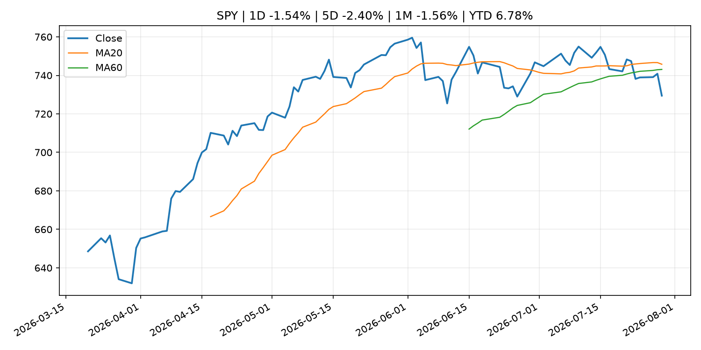
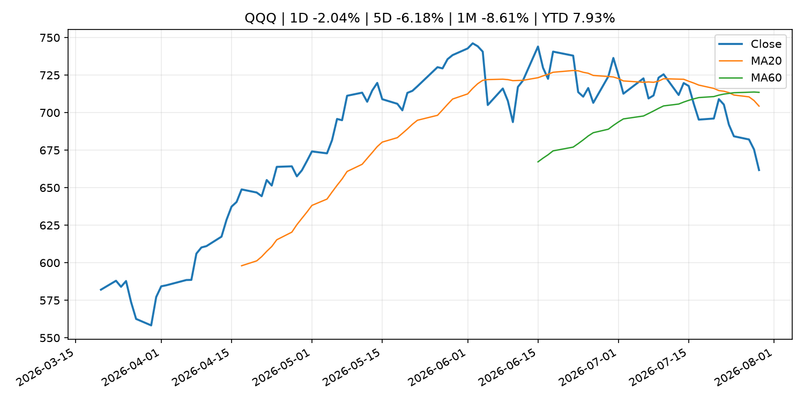
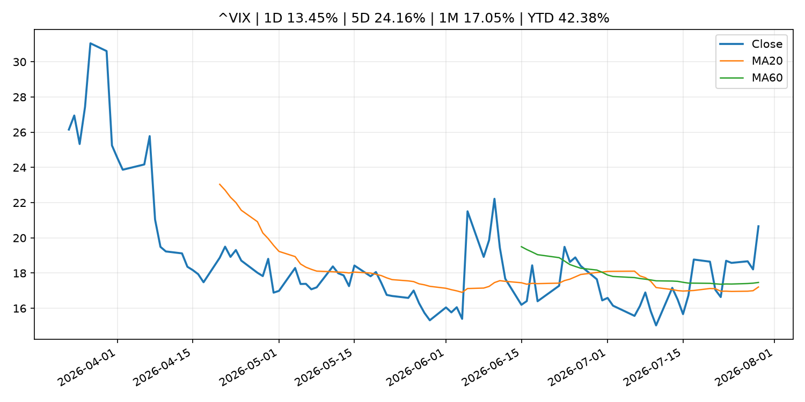
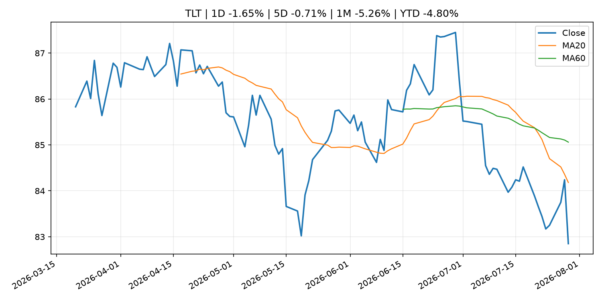
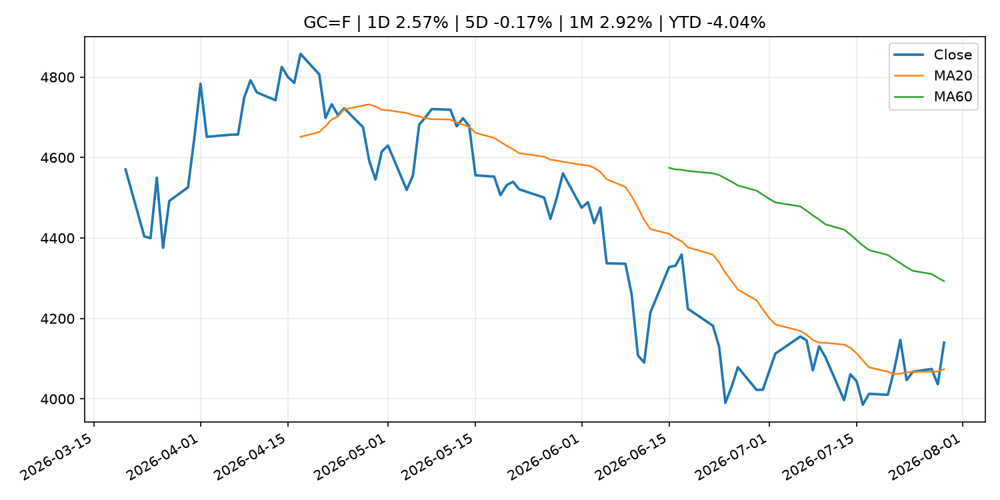
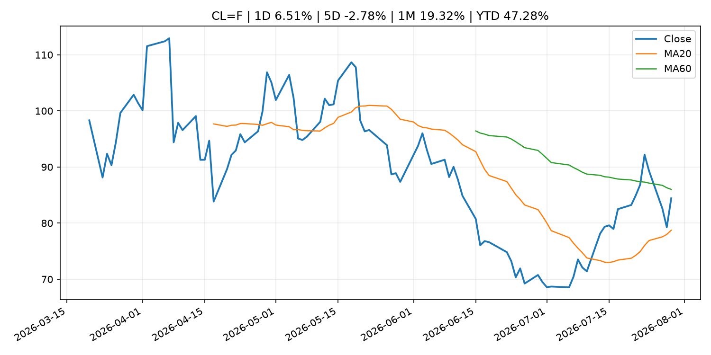
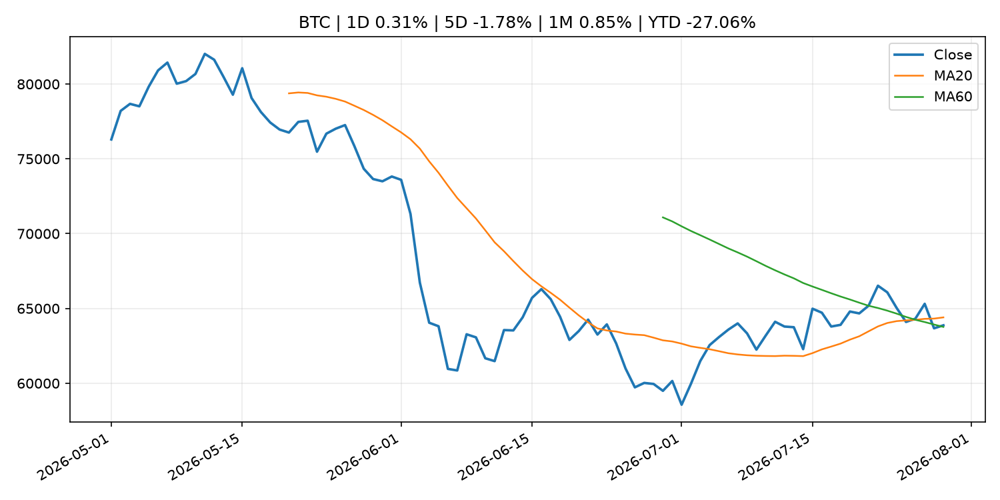
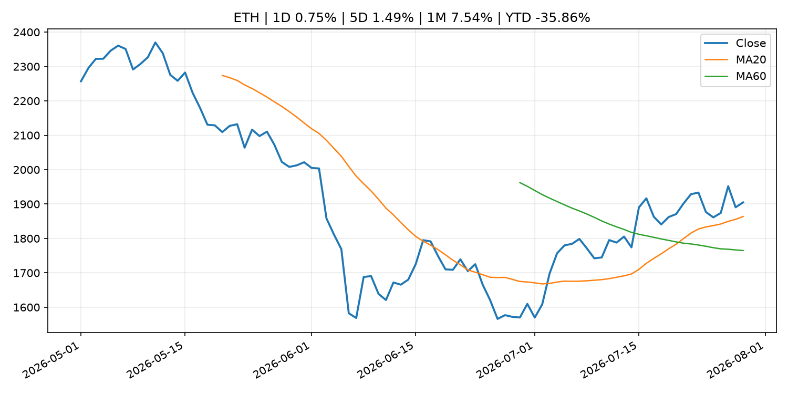
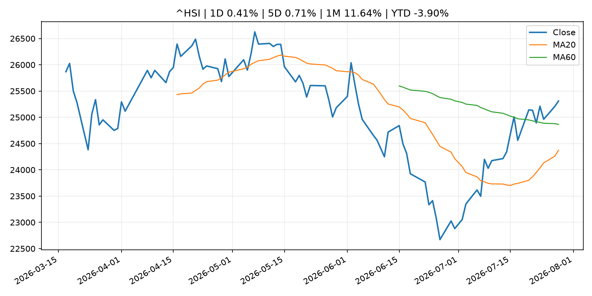

Global Macro Morning Briefing - 2026-07-30
Not financial advice / 非投资建议。
0. 今日总览
- 市场状态：mixed。股指回落、VIX 抬升且避险资产走强，市场偏风险规避。 但存在信号冲突，需要降低单一叙事置信度。
- 今日三大主线：
- geopolitical_risk: Why the USO oil ETF is a better buy than crude futures as the Iran war rages
- central_bank_decision: Bond market is calling Warsh’s bluff on inflation fight as yields surge
- macro_data: Indicators for Core CPI
- 一句话结论：今日晨报重点关注：地缘风险可能推升避险需求、能源价格和市场波动率。；央行决策会重定价利率、汇率、久期资产和风险资产。。跨资产方面，SPY 1D -1.54%；QQQ 1D -2.04%；^VIX 1D 13.45%；TLT 1D -1.65%；GC=F 1D 2.57%；CL=F 1D 6.51%；BTC 1D 0.31%；ETH 1D 0.75%；股指回落、VIX 抬升且避险资产走强，市场偏风险规避。 但存在信号冲突，需要降低单一叙事置信度。政策、通胀、利率、美元、美债、能源和加密监管仍是主要观察线索。所有结论仅基于公开数据与短摘要整理，不构成投资建议。
1. 隔夜跨资产市场
- 美股：SPY 1D -1.54%，QQQ 1D -2.04%，整体趋势需结合 VIX 和利率确认。
- 美债/美元：TLT 1D -1.65%，美元指数 1D -0.57%，是判断折现率压力的核心线索。
- 黄金/原油：黄金 1D 2.57%，原油 1D 6.51%，用于观察避险、通胀和地缘风险。
- 加密：BTC 1D 0.31%，ETH 1D 0.75%，关注是否独立于纳指走出加密自身行情。
- 港股/A股：恒生 1D 0.41%，沪深300/上证 1D n/a，重点看中国政策预期与人民币线索。
- 风险观察：关注避险是否演变为信用或流动性压力。
US_EQUITY
| symbol | latest close | 1D | 5D | 1M | YTD | trend |
|---|---|---|---|---|---|---|
| SPY | 729.46 | -1.54% | -2.40% | -1.56% | 6.78% | range_bound |
| QQQ | 661.73 | -2.04% | -6.18% | -8.61% | 7.93% | strong_downtrend |
| DIA | 515.41 | -2.18% | -1.16% | -1.20% | 6.57% | range_bound |
| IWM | 288.57 | -1.64% | -1.78% | -3.48% | 15.99% | range_bound |
| VTI | 360.42 | -1.52% | -2.29% | -1.83% | 7.17% | range_bound |
US_MACRO_MARKET
| symbol | latest close | 1D | 5D | 1M | YTD | trend |
|---|---|---|---|---|---|---|
| ^VIX | 20.66 | 13.45% | 24.16% | 17.05% | 42.38% | range_bound |
| DX-Y.NYB | 100.80 | -0.57% | -0.33% | -0.30% | 2.42% | range_bound |
| TLT | 82.85 | -1.65% | -0.71% | -5.26% | -4.80% | strong_downtrend |
| IEF | 93.17 | -0.42% | 0.08% | -1.99% | -3.03% | downtrend |
COMMODITIES
| symbol | latest close | 1D | 5D | 1M | YTD | trend |
|---|---|---|---|---|---|---|
| GC=F | 4,139.90 | 2.57% | -0.17% | 2.92% | -4.04% | range_bound |
| SI=F | 58.47 | 2.04% | -2.59% | 0.50% | -17.14% | downtrend |
| CL=F | 84.42 | 6.51% | -2.78% | 19.32% | 47.28% | range_bound |
| BZ=F | 90.40 | 7.50% | -3.90% | 23.58% | 48.81% | range_bound |
| NG=F | 2.73 | 2.48% | -6.74% | -14.24% | -24.60% | strong_downtrend |
| HG=F | 6.37 | 0.74% | -1.27% | 4.45% | 12.93% | range_bound |
HK_MARKET
| symbol | latest close | 1D | 5D | 1M | YTD | trend |
|---|---|---|---|---|---|---|
| ^HSI | 25,310.85 | 0.41% | 0.71% | 11.64% | -3.90% | range_bound |
| 0700.HK | 466.40 | 4.29% | 5.86% | 10.99% | -25.14% | uptrend |
| 9988.HK | 113.60 | 1.43% | 0.00% | 22.15% | -23.76% | range_bound |
| 3690.HK | 92.30 | 2.21% | 10.34% | 36.44% | -11.76% | strong_uptrend |
| 1810.HK | 31.88 | 8.95% | 19.49% | 45.84% | -20.85% | range_bound |
| 1211.HK | 93.60 | 4.23% | 6.55% | 28.40% | -5.22% | range_bound |
CRYPTO
| symbol | latest close | 1D | 5D | 1M | YTD | trend |
|---|---|---|---|---|---|---|
| BTC | 63,873.56 | 0.31% | -1.78% | 0.85% | -27.06% | range_bound |
| ETH | 1,904.84 | 0.75% | 1.49% | 7.54% | -35.86% | uptrend |
| SOLANA | 73.53 | -0.90% | -2.95% | -8.76% | -40.95% | range_bound |
| BINANCECOIN | 570.38 | 0.84% | 0.60% | -1.08% | -33.88% | downtrend |
| RIPPLE | 1.07 | 0.81% | -3.03% | -3.48% | -41.69% | strong_downtrend |
2. 今日最重要的 10 条新闻
1. Why the USO oil ETF is a better buy than crude futures as the Iran war rages
- 来源：MarketWatch Top Stories
- 时间：2026-07-29T22:44:00+00:00
- 地区：US
- 事件类型：geopolitical_risk
- 重要性层级：Tier 1
- 一句话摘要：The United States Oil Fund has climbed by 58% since the start of the Iran war, more than double the gain of WTI crude futures.
- 为什么重要：地缘风险可能推升避险需求、能源价格和市场波动率。
- 可能影响：主要影响 CL=F，方向为 positive，强度 high；供给扰动或 OPEC 减产通常推升 WTI 原油。
- 资产：CL=F 方向：positive 强度：high 原因：供给扰动或 OPEC 减产通常推升 WTI 原油。
- 资产：BZ=F 方向：positive 强度：high 原因：全球供给风险通常直接影响 Brent 原油。
- 资产：SPY 方向：mixed 强度：medium 原因：能源股可能受益，但通胀和成本压力不利于宽基风险资产。
- 资产：BTC 方向：mixed 强度：high 原因：加密监管或 ETF 进展会改变 BTC 的资金流和风险溢价。
- 资产：ETH 方向：mixed 强度：high 原因：监管框架会影响 ETH 产品化和机构参与度。
- 资产：COIN 方向：mixed 强度：medium 原因：监管清晰度和执法风险会影响交易平台估值。
- 原文链接：https://www.marketwatch.com/story/why-the-uso-oil-etf-is-a-better-buy-than-crude-futures-as-the-iran-war-rages-85d1ebe0?mod=mw_rss_topstories
2. Bond market is calling Warsh’s bluff on inflation fight as yields surge
- 来源：MarketWatch Top Stories
- 时间：2026-07-29T21:43:00+00:00
- 地区：US
- 事件类型：central_bank_decision
- 重要性层级：Tier 1
- 一句话摘要：The yield on the 30-year Treasury bond touched its highest level since 2007 during Warsh’s press conference.
- 为什么重要：央行决策会重定价利率、汇率、久期资产和风险资产。
- 可能影响：主要影响 DXY，方向为 positive，强度 high；通胀压力可能推高政策利率预期并支撑美元。
- 资产：DXY 方向：positive 强度：high 原因：通胀压力可能推高政策利率预期并支撑美元。
- 资产：TLT 方向：negative 强度：high 原因：通胀上行通常推升收益率、压低长债价格。
- 资产：QQQ 方向：negative 强度：high 原因：更高利率对成长股估值折现率不利。
- 资产：SPY 方向：mixed 强度：medium 原因：名义增长可能支撑收入，但更高利率压制估值。
- 资产：GC=F 方向：mixed 强度：medium 原因：通胀对黄金是支撑，但实际利率上行会形成压力。
- 资产：BTC 方向：mixed 强度：medium 原因：抗通胀叙事和流动性收紧可能相互抵消。
- 原文链接：https://www.marketwatch.com/story/bond-market-is-calling-warshs-bluff-on-inflation-fight-as-yields-surge-4700f9b5?mod=mw_rss_topstories
3. Indicators for Core CPI
- 来源：Bank of Japan Announcements
- 时间：2026-07-28T14:00:00+09:00
- 地区：Japan
- 事件类型：macro_data
- 重要性层级：Tier 1
- 一句话摘要：Indicators for Core CPI
- 为什么重要：这类宏观数据会直接改变市场对通胀、增长和政策路径的预期。
- 可能影响：主要影响 DXY，方向为 positive，强度 high；通胀压力可能推高政策利率预期并支撑美元。
- 资产：DXY 方向：positive 强度：high 原因：通胀压力可能推高政策利率预期并支撑美元。
- 资产：TLT 方向：negative 强度：high 原因：通胀上行通常推升收益率、压低长债价格。
- 资产：QQQ 方向：negative 强度：high 原因：更高利率对成长股估值折现率不利。
- 资产：SPY 方向：mixed 强度：medium 原因：名义增长可能支撑收入，但更高利率压制估值。
- 资产：GC=F 方向：mixed 强度：medium 原因：通胀对黄金是支撑，但实际利率上行会形成压力。
- 资产：BTC 方向：mixed 强度：medium 原因：抗通胀叙事和流动性收紧可能相互抵消。
- 原文链接：http://www.boj.or.jp/en/research/research_data/cpi/index.htm
4. Citadel bets on a Fed rate hike Wednesday as bitcoin analysts call a hold. Someone will be wrong.
- 来源：CoinDesk
- 时间：2026-07-29T05:37:38+00:00
- 地区：global
- 事件类型：central_bank_decision
- 重要性层级：Tier 1
- 一句话摘要：Citadel bets on a Fed rate hike Wednesday as bitcoin analysts call a hold. Someone will be wrong.
- 为什么重要：央行决策会重定价利率、汇率、久期资产和风险资产。
- 可能影响：主要影响 QQQ，方向为 negative，强度 high；鹰派政策提高折现率，压制成长股估值。
- 资产：QQQ 方向：negative 强度：high 原因：鹰派政策提高折现率，压制成长股估值。
- 资产：SPY 方向：negative 强度：medium 原因：更紧政策通常削弱风险偏好。
- 资产：TLT 方向：negative 强度：high 原因：利率上行通常压低长债价格。
- 资产：DXY 方向：positive 强度：high 原因：更高利率预期通常支撑美元。
- 资产：BTC 方向：negative 强度：high 原因：流动性收紧通常压制高 beta 加密资产。
- 原文链接：https://www.coindesk.com/markets/2026/07/29/citadel-bets-on-a-fed-rate-hike-wednesday-as-bitcoin-analysts-call-a-hold-someone-will-be-wrong
5. Federal Reserve issues FOMC statement
- 来源：Federal Reserve Press Releases
- 时间：2026-07-29T18:00:00+00:00
- 地区：US
- 事件类型：central_bank_decision
- 重要性层级：Tier 1
- 一句话摘要：Federal Reserve issues FOMC statement
- 为什么重要：央行决策会重定价利率、汇率、久期资产和风险资产。
- 可能影响：可能影响利率、汇率、风险资产或大宗商品预期，但当前公开信息不足以判断明确方向。
- 资产：暂无明确资产映射
- 方向：unknown
- 强度：low
- 原因：公开信息不足以判断方向。
- 原文链接：https://www.federalreserve.gov/newsevents/pressreleases/monetary20260729a.htm
6. Bitcoin steadies above $64,000 as crypto looks to Fed interest-rate decision
- 来源：CoinDesk
- 时间：2026-07-29T10:34:18+00:00
- 地区：global
- 事件类型：central_bank_decision
- 重要性层级：Tier 1
- 一句话摘要：Bitcoin steadies above $64,000 as crypto looks to Fed interest-rate decision
- 为什么重要：央行决策会重定价利率、汇率、久期资产和风险资产。
- 可能影响：可能影响利率、汇率、风险资产或大宗商品预期，但当前公开信息不足以判断明确方向。
- 资产：暂无明确资产映射
- 方向：unknown
- 强度：low
- 原因：公开信息不足以判断方向。
- 原文链接：https://www.coindesk.com/markets/2026/07/29/bitcoin-steadies-above-usd64-000-as-crypto-looks-to-fed-interest-rate-decision
7. Robinhood slides 4% despite earnings beat as crypto revenue cools
- 来源：CoinDesk
- 时间：2026-07-29T20:40:43+00:00
- 地区：global
- 事件类型：earnings
- 重要性层级：Tier 2
- 一句话摘要：Robinhood slides 4% despite earnings beat as crypto revenue cools
- 为什么重要：大型科技股盈利和资本开支会影响纳指、半导体和 AI 交易主线。
- 可能影响：主要影响 QQQ，方向为 positive，强度 high；通胀低于预期通常压低利率预期，有利于久期较长的成长股。
- 资产：QQQ 方向：positive 强度：high 原因：通胀低于预期通常压低利率预期，有利于久期较长的成长股。
- 资产：SPY 方向：positive 强度：medium 原因：通胀降温改善软着陆预期，对宽基股指偏正面。
- 资产：TLT 方向：positive 强度：high 原因：降息预期升温时长债价格通常受益。
- 资产：DXY 方向：negative 强度：medium 原因：美元可能随美债收益率和政策利率预期回落。
- 资产：GC=F 方向：positive 强度：medium 原因：实际利率压力下降时黄金通常受益。
- 资产：BTC 方向：positive 强度：medium 原因：流动性预期改善通常支持高 beta 加密资产。
- 原文链接：https://www.coindesk.com/markets/2026/07/29/robinhood-slides-4-despite-earnings-beat-as-crypto-revenue-cools
8. 'Anything remotely dovish' from Fed could be good for bitcoin, says analyst
- 来源：CoinDesk
- 时间：2026-07-28T20:23:31+00:00
- 地区：global
- 事件类型：central_bank_speech
- 重要性层级：Tier 2
- 一句话摘要：'Anything remotely dovish' from Fed could be good for bitcoin, says analyst
- 为什么重要：央行官员表态可能影响市场对下一次会议的定价。
- 可能影响：主要影响 QQQ，方向为 positive，强度 high；宽松预期降低折现率，有利于成长股。
- 资产：QQQ 方向：positive 强度：high 原因：宽松预期降低折现率，有利于成长股。
- 资产：SPY 方向：positive 强度：high 原因：宽松政策通常改善风险偏好。
- 资产：TLT 方向：positive 强度：high 原因：降息预期通常推升长债价格。
- 资产：DXY 方向：negative 强度：medium 原因：利差预期回落通常压制美元。
- 资产：GC=F 方向：positive 强度：medium 原因：实际利率下降通常利好黄金。
- 资产：BTC 方向：positive 强度：high 原因：流动性改善通常支持加密资产。
- 原文链接：https://www.coindesk.com/markets/2026/07/28/remotely-dovish-fed-could-be-good-for-bitcoin-says-analyst
9. Meta likely to highlight smart glasses, avoid social media policy on upcoming earnings call, Kalshi traders say
- 来源：CNBC Economy
- 时间：2026-07-28T17:40:03+00:00
- 地区：US
- 事件类型：earnings
- 重要性层级：Tier 2
- 一句话摘要：The Facebook and Instagram owner is set to report earnings after the market close on Wednesday.
- 为什么重要：大型科技股盈利和资本开支会影响纳指、半导体和 AI 交易主线。
- 可能影响：主要影响 QQQ，方向为 mixed，强度 high；AI 资本开支会影响大型科技股盈利和估值预期。
- 资产：QQQ 方向：mixed 强度：high 原因：AI 资本开支会影响大型科技股盈利和估值预期。
- 资产：SMH 方向：mixed 强度：high 原因：AI 投资周期直接影响半导体需求。
- 资产：NVDA 方向：mixed 强度：high 原因：AI 训练和推理需求是英伟达收入预期核心变量。
- 资产：MSFT 方向：mixed 强度：medium 原因：云和 AI 资本开支影响利润率与增长叙事。
- 资产：GOOGL 方向：mixed 强度：medium 原因：AI 投资和搜索商业化影响估值。
- 资产：META 方向：mixed 强度：medium 原因：AI 基建支出与广告效率共同影响市场预期。
- 原文链接：https://www.cnbc.com/2026/07/28/meta-q2-earnings-call-mentions-kalshi-market-odds-.html
10. Stablecoin firm Brale says new protocol can remove a major hurdle to scaling custom tokens
- 来源：CoinDesk
- 时间：2026-07-29T15:27:30+00:00
- 地区：global
- 事件类型：crypto_market_structure
- 重要性层级：Tier 2
- 一句话摘要：Stablecoin firm Brale says new protocol can remove a major hurdle to scaling custom tokens
- 为什么重要：加密市场结构和监管变化会影响 BTC、ETH 及相关股票的风险溢价。
- 可能影响：主要影响 BTC，方向为 mixed，强度 high；加密监管或 ETF 进展会改变 BTC 的资金流和风险溢价。
- 资产：BTC 方向：mixed 强度：high 原因：加密监管或 ETF 进展会改变 BTC 的资金流和风险溢价。
- 资产：ETH 方向：mixed 强度：high 原因：监管框架会影响 ETH 产品化和机构参与度。
- 资产：COIN 方向：mixed 强度：medium 原因：监管清晰度和执法风险会影响交易平台估值。
- 资产：crypto market 方向：mixed 强度：high 原因：信息影响整个加密市场结构，但方向取决于细节。
- 原文链接：https://www.coindesk.com/business/2026/07/29/stablecoin-firm-brale-says-new-protocol-can-remove-a-major-hurdle-to-scaling-custom-tokens
3. 政策与央行观察
1. Bond market is calling Warsh’s bluff on inflation fight as yields surge
- 来源：MarketWatch Top Stories
- 时间：2026-07-29T21:43:00+00:00
- 地区：US
- 事件类型：central_bank_decision
- 重要性层级：Tier 1
- 一句话摘要：The yield on the 30-year Treasury bond touched its highest level since 2007 during Warsh’s press conference.
- 为什么重要：央行决策会重定价利率、汇率、久期资产和风险资产。
- 可能影响：主要影响 DXY，方向为 positive，强度 high；通胀压力可能推高政策利率预期并支撑美元。
- 资产：DXY 方向：positive 强度：high 原因：通胀压力可能推高政策利率预期并支撑美元。
- 资产：TLT 方向：negative 强度：high 原因：通胀上行通常推升收益率、压低长债价格。
- 资产：QQQ 方向：negative 强度：high 原因：更高利率对成长股估值折现率不利。
- 资产：SPY 方向：mixed 强度：medium 原因：名义增长可能支撑收入，但更高利率压制估值。
- 资产：GC=F 方向：mixed 强度：medium 原因：通胀对黄金是支撑，但实际利率上行会形成压力。
- 资产：BTC 方向：mixed 强度：medium 原因：抗通胀叙事和流动性收紧可能相互抵消。
- 原文链接：https://www.marketwatch.com/story/bond-market-is-calling-warshs-bluff-on-inflation-fight-as-yields-surge-4700f9b5?mod=mw_rss_topstories
2. Citadel bets on a Fed rate hike Wednesday as bitcoin analysts call a hold. Someone will be wrong.
- 来源：CoinDesk
- 时间：2026-07-29T05:37:38+00:00
- 地区：global
- 事件类型：central_bank_decision
- 重要性层级：Tier 1
- 一句话摘要：Citadel bets on a Fed rate hike Wednesday as bitcoin analysts call a hold. Someone will be wrong.
- 为什么重要：央行决策会重定价利率、汇率、久期资产和风险资产。
- 可能影响：主要影响 QQQ，方向为 negative，强度 high；鹰派政策提高折现率，压制成长股估值。
- 资产：QQQ 方向：negative 强度：high 原因：鹰派政策提高折现率，压制成长股估值。
- 资产：SPY 方向：negative 强度：medium 原因：更紧政策通常削弱风险偏好。
- 资产：TLT 方向：negative 强度：high 原因：利率上行通常压低长债价格。
- 资产：DXY 方向：positive 强度：high 原因：更高利率预期通常支撑美元。
- 资产：BTC 方向：negative 强度：high 原因：流动性收紧通常压制高 beta 加密资产。
- 原文链接：https://www.coindesk.com/markets/2026/07/29/citadel-bets-on-a-fed-rate-hike-wednesday-as-bitcoin-analysts-call-a-hold-someone-will-be-wrong
3. Federal Reserve issues FOMC statement
- 来源：Federal Reserve Press Releases
- 时间：2026-07-29T18:00:00+00:00
- 地区：US
- 事件类型：central_bank_decision
- 重要性层级：Tier 1
- 一句话摘要：Federal Reserve issues FOMC statement
- 为什么重要：央行决策会重定价利率、汇率、久期资产和风险资产。
- 可能影响：可能影响利率、汇率、风险资产或大宗商品预期，但当前公开信息不足以判断明确方向。
- 资产：暂无明确资产映射
- 方向：unknown
- 强度：low
- 原因：公开信息不足以判断方向。
- 原文链接：https://www.federalreserve.gov/newsevents/pressreleases/monetary20260729a.htm
4. Bitcoin steadies above $64,000 as crypto looks to Fed interest-rate decision
- 来源：CoinDesk
- 时间：2026-07-29T10:34:18+00:00
- 地区：global
- 事件类型：central_bank_decision
- 重要性层级：Tier 1
- 一句话摘要：Bitcoin steadies above $64,000 as crypto looks to Fed interest-rate decision
- 为什么重要：央行决策会重定价利率、汇率、久期资产和风险资产。
- 可能影响：可能影响利率、汇率、风险资产或大宗商品预期，但当前公开信息不足以判断明确方向。
- 资产：暂无明确资产映射
- 方向：unknown
- 强度：low
- 原因：公开信息不足以判断方向。
- 原文链接：https://www.coindesk.com/markets/2026/07/29/bitcoin-steadies-above-usd64-000-as-crypto-looks-to-fed-interest-rate-decision
5. 'Anything remotely dovish' from Fed could be good for bitcoin, says analyst
- 来源：CoinDesk
- 时间：2026-07-28T20:23:31+00:00
- 地区：global
- 事件类型：central_bank_speech
- 重要性层级：Tier 2
- 一句话摘要：'Anything remotely dovish' from Fed could be good for bitcoin, says analyst
- 为什么重要：央行官员表态可能影响市场对下一次会议的定价。
- 可能影响：主要影响 QQQ，方向为 positive，强度 high；宽松预期降低折现率，有利于成长股。
- 资产：QQQ 方向：positive 强度：high 原因：宽松预期降低折现率，有利于成长股。
- 资产：SPY 方向：positive 强度：high 原因：宽松政策通常改善风险偏好。
- 资产：TLT 方向：positive 强度：high 原因：降息预期通常推升长债价格。
- 资产：DXY 方向：negative 强度：medium 原因：利差预期回落通常压制美元。
- 资产：GC=F 方向：positive 强度：medium 原因：实际利率下降通常利好黄金。
- 资产：BTC 方向：positive 强度：high 原因：流动性改善通常支持加密资产。
- 原文链接：https://www.coindesk.com/markets/2026/07/28/remotely-dovish-fed-could-be-good-for-bitcoin-says-analyst
6. Stablecoin firm Brale says new protocol can remove a major hurdle to scaling custom tokens
- 来源：CoinDesk
- 时间：2026-07-29T15:27:30+00:00
- 地区：global
- 事件类型：crypto_market_structure
- 重要性层级：Tier 2
- 一句话摘要：Stablecoin firm Brale says new protocol can remove a major hurdle to scaling custom tokens
- 为什么重要：加密市场结构和监管变化会影响 BTC、ETH 及相关股票的风险溢价。
- 可能影响：主要影响 BTC，方向为 mixed，强度 high；加密监管或 ETF 进展会改变 BTC 的资金流和风险溢价。
- 资产：BTC 方向：mixed 强度：high 原因：加密监管或 ETF 进展会改变 BTC 的资金流和风险溢价。
- 资产：ETH 方向：mixed 强度：high 原因：监管框架会影响 ETH 产品化和机构参与度。
- 资产：COIN 方向：mixed 强度：medium 原因：监管清晰度和执法风险会影响交易平台估值。
- 资产：crypto market 方向：mixed 强度：high 原因：信息影响整个加密市场结构，但方向取决于细节。
- 原文链接：https://www.coindesk.com/business/2026/07/29/stablecoin-firm-brale-says-new-protocol-can-remove-a-major-hurdle-to-scaling-custom-tokens
4. 市场异动与图表
- SPY 下跌 -1.54%
- QQQ 下跌 -2.04%
- VIX 上涨 13.45%
- TLT 下跌 -1.65%
- DXY 下跌 -0.57%
- Gold 上涨 2.57%
- Oil 上涨 6.51%
信号矛盾
- 股债同时承压，可能是利率或流动性冲击而非传统避险。
SPY

QQQ

^VIX

TLT

GC=F

CL=F

BTC

ETH

^HSI

5. 华尔街与机构公开观点
- 暂无可靠公开观点。
6. 今日重点关注
- 经济数据：经济数据：暂无可靠公开日历数据；如配置经济日历源后可自动填充。
- 央行讲话：央行讲话：暂无可靠公开日历数据；重点跟踪 Fed、ECB、BoJ、PBOC 官网 RSS。
- 财报：财报：暂无可靠数据。
- 政策事件：政策事件：暂无可靠数据。
- 风险提醒：风险提醒：关注数据源失败项、突发地缘风险、利率和美元的二阶反应。
7. 英文金融表达与宏观概念
- inflation expectations：通胀预期，指家庭、企业或市场对未来通胀的预估。 例句：Inflation expectations can shape wage bargaining and bond yields.
- real yield：实际收益率，名义利率扣除通胀预期后的收益率。 例句：Gold often reacts more to real yields than nominal yields.
- terminal rate：终端利率，市场预期本轮加息周期的最高政策利率。 例句：A higher terminal rate can pressure growth stocks.
- risk-off：避险模式，资金偏向美元、国债、黄金等防御资产。 例句：A geopolitical shock can push markets into risk-off mode.
- supply disruption：供给扰动，通常指能源或商品供应受冲突、减产或天气影响。 例句：Supply disruption can lift oil prices and inflation expectations.
- market structure：市场结构，指交易、托管、清算、ETF、监管等制度安排。 例句：Crypto market structure rules can affect institutional participation.
8. 背景材料
- Here are the five big takeaways from this week's Fed meeting（CNBC Economy，other）：The Federal Reserve on Wednesday followed through on expectations for no interest rate change.
- Chipotle lifts its sales forecast even as a lettuce-linked outbreak slows foot traffic（MarketWatch Top Stories，other）：Mexican fast-casual chain acknowledged ‘softening’ traffic in the second half of July, but it’s taking a rosier view of its full-year prospects.
- Jeffrey Gundlach says the bond market is telling Warsh the Fed has to start acting on inflation（CNBC Economy，other）：Gundlach said the divergent moves across the Treasury curve showed investors' skepticism that the Fed will ultimately follow through.
- My girlfriend is 62. Can she claim her late husband’s full Social Security benefit — or does she have to wait?（MarketWatch Top Stories，other）：“Her husband passed away 10 years ago. They had been married for more than 20 years.”
- Here's what changed in the second Fed statement under Warsh（CNBC Economy，other）：This is a comparison of Wednesday's Federal Open Market Committee statement with the one issued after the Fed's previous policymaking meeting in June.
- Crypto Long & Short: What this year's $972 million crypto hacks actually tell us about security（CoinDesk，other）：Crypto Long & Short: What this year's $972 million crypto hacks actually tell us about security
- The inside story of how a hike in Hong Kong changed crypto trading forever（CoinDesk，other）：The inside story of how a hike in Hong Kong changed crypto trading forever
- Binance offers gold and silver options after commodity futures pull in billions in daily volume（CoinDesk，other）：Binance offers gold and silver options after commodity futures pull in billions in daily volume
- ECB wage tracker at 2.7% in Q1 2027, indicating stable negotiated wage pressures（ECB Press Releases，other）：ECB wage tracker at 2.7% in Q1 2027, indicating stable negotiated wage pressures
- Live updates: Bitcoin edges above $64,000 as Fed holds policy steady（CoinDesk，other）：Live updates: Bitcoin edges above $64,000 as Fed holds policy steady
- Bitcoin rises toward $64,000 as Korea's record chip crash leaves crypto untouched（CoinDesk，other）：Bitcoin rises toward $64,000 as Korea's record chip crash leaves crypto untouched
- Average Contract Interest Rates on Loans and Discounts (June)（Bank of Japan Announcements，other）：Average Contract Interest Rates on Loans and Discounts (June)
9. 数据源、失败项与免责声明
- 采集时间：2026-07-29T22:59:48
- 数据源：公开 RSS、Yahoo Finance、CoinGecko、AKShare、FRED、SEC data.sec.gov，以及用户自有 inputs/reports 文件。
- 合规说明：不绕过 WSJ、Bloomberg、FT、Reuters 等付费墙；对付费媒体只使用公开 RSS 标题、摘要、链接和发布时间。
- 免责声明：Not financial advice / 非投资建议。本项目仅供个人学习、研究和信息整理，不构成投资建议、交易建议或任何收益承诺。
- 失败或跳过的数据源：
- crypto data failed coin=dogecoin
- China market data failed symbol=上证指数: empty dataframe
- China market data failed symbol=深证成指: empty dataframe
- China market data failed symbol=创业板指: empty dataframe
- China market data failed symbol=沪深300: empty dataframe
- China market data failed symbol=中证500: empty dataframe
- China market data failed symbol=科创50: empty dataframe
- FRED_API_KEY not set; skipping FRED macro series
- SEC failed cik=0000320193
- SEC failed cik=0000789019
- SEC failed cik=0001045810
- SEC failed cik=0001318605
- SEC failed cik=0001577552